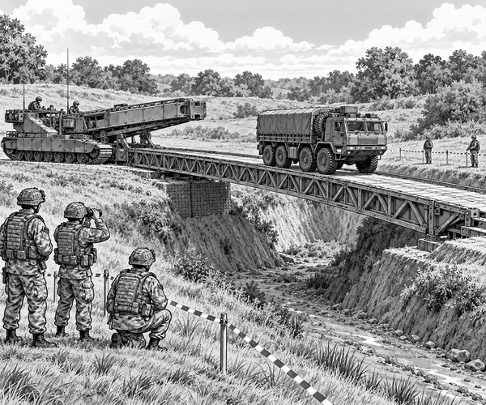

FACT
The army training route crossed a wide practice gap.
Usually, a strong bridge joined the two grassy banks.
But today there was no bridge.
A line of heavy vehicles waited on one side.
They needed to reach the other side.
Then a huge tracked machine rumbled over the hill.
It looked a little like a tank.
But it had no turning gun turret.
A long metal bridge rested across its back.
This vehicle was called Titan.
Titan is an armoured bridge launcher used by the British Army.
It helps Royal Engineers make a crossing where vehicles cannot drive.
The engineers stopped Titan well before the edge.
They studied the gap.
They measured the distance.
They checked the ground on both banks.
Soft ground might sink beneath a heavy bridge.
Firm ground would hold it safely.
The team marked a straight line towards the gap.
Titan's driver followed it slowly.
The wide tracks spread the vehicle's weight over the earth.
At the marked place, Titan stopped.
Its engine kept rumbling.
Powerful hydraulic arms began to move.
They raised the metal bridge from Titan's back.
The bridge tilted towards the sky.
Then the arms pushed it forwards.
Farther.
Farther.
The front of the bridge passed over the empty gap.
It reached the far bank.
The arms lowered it gently.
One end rested on firm ground.
The other end rested beside Titan.
The gap now had a road across it.
Vehicle fact: Titan uses the same kind of tracked base as a Challenger 2 tank. The complete vehicle weighs about 62.5 tonnes.
The engineers did not send a truck across at once.
First, they inspected both ends of the bridge.
They checked that it was level.
They checked every support.
Only then did the crossing begin.
A heavy supply truck rolled onto the metal deck.
Its first wheels reached the middle.
The bridge stayed firm.
The rear wheels followed.
Soon, the truck was safely on the far bank.
Another vehicle crossed behind it.
Then another.
The route was open.
Bridge fact: Titan can carry and lay several kinds of close-support bridge. British Army bridge systems can help vehicles cross gaps up to 60 metres wide.
Titan is not only useful during fighting.
Military bridges can also help during emergencies and humanitarian work.
A flood or earthquake may damage an ordinary bridge.
Engineers can bring equipment to make a new crossing.
At the end of the exercise, the vehicles returned.
Titan waited beside the gap.
It had done a giant job without firing a shot.
It had carried a road on its back.
Then it had placed that road exactly where it was needed.
1. Why did the engineers check both banks?
2. What did Titan carry?
3. What crossed after the safety check?